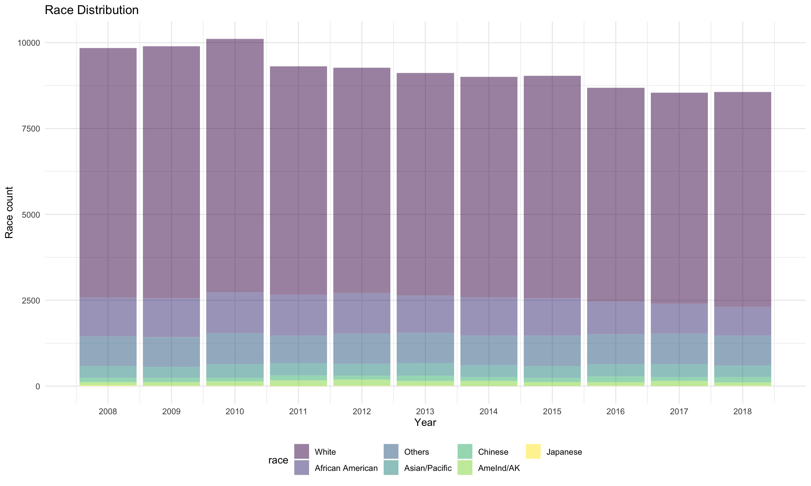
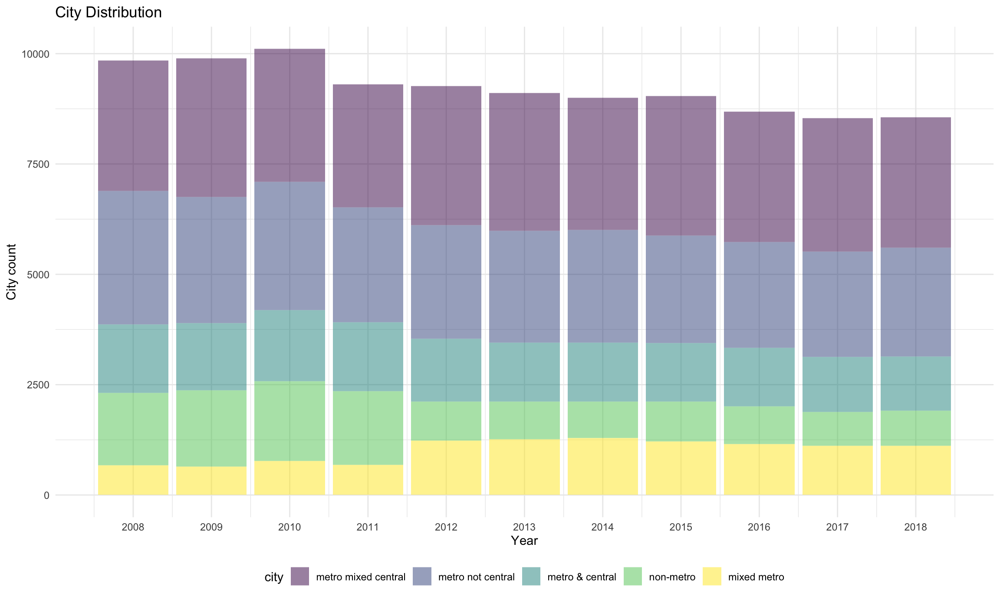
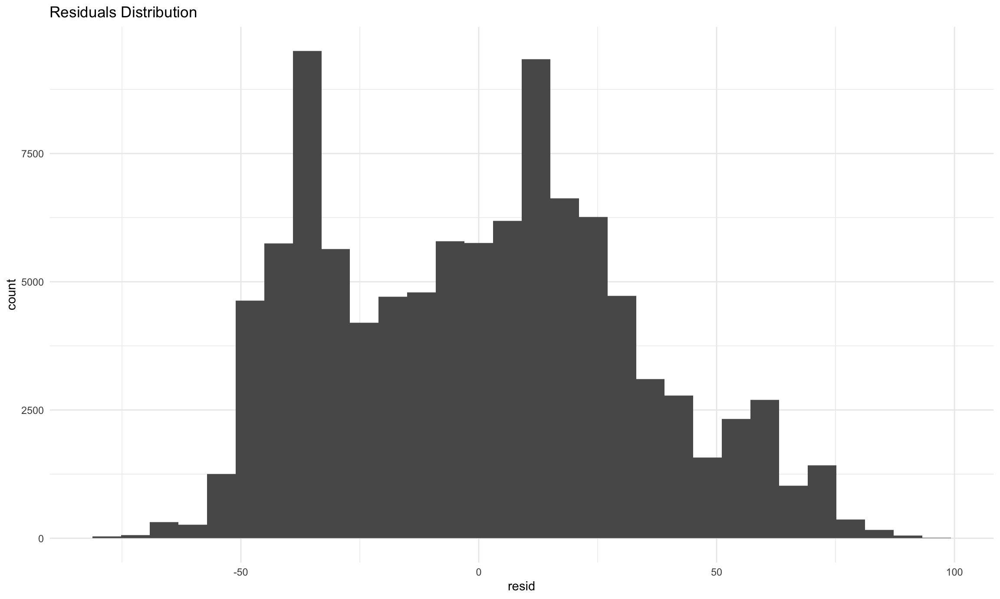

Regression Analysis
Data Description
Composition
Race

Geography

Number of Children
Correlation Matrix

Comments: From the correlation matrix, it could be observed that the correlation between any two predictors is not greater than 0.8, which implies there is less likely to have multicollinearity among these covariates.The predictors tend to be independent of each other. Values less than 0 indicate a negative correlation; values greater than 0 indicate a positive correlation.
Modeling
Predictors
race: Race with 7 levels;
city: Metropolitan Status with 5 levels;
noc: Number of Children with 9 levels;
income: Annually Family Income.
Outcome
- percent: Enrollment rate is calculated after grouping by year, age, city, race, noc and states variables; highest_degree and school_type are not grouped since both variables are directly correlated with the enrollment/attendance rate.
Multiple Linear Regression
The fitted model:
\[ \hat{percent} = \beta_0 + \beta_1income + \beta_2race + \beta_3city + \beta_4noc\]
The dataframe used for the following analysis excludes data when percent(attendance rate) equals to 0 and 1. And the predictor NOC decreases to 6 levels.
| term | estimate | std.error | statistic | p.value |
|---|---|---|---|---|
| (Intercept) | 0.515 | 0.002 | 323.435 | 0.000 |
| income | 0.000 | 0.000 | -5.839 | 0.000 |
| Race:African American | -0.059 | 0.003 | -19.295 | 0.000 |
| Race:Others | -0.069 | 0.003 | -21.534 | 0.000 |
| Race:Asian/Pacific | 0.039 | 0.005 | 7.140 | 0.000 |
| Race:Chinese | 0.093 | 0.010 | 9.063 | 0.000 |
| Race:AmeInd/AK | 0.018 | 0.017 | 1.072 | 0.284 |
| Race:Japanese | -0.078 | 0.078 | -1.002 | 0.317 |
| City:in metropolitian but not in central city | -0.010 | 0.002 | -4.919 | 0.000 |
| City:metro & central | 0.050 | 0.003 | 19.334 | 0.000 |
| City:non-metro | -0.063 | 0.003 | -21.729 | 0.000 |
| City:mixed metro | -0.054 | 0.003 | -17.664 | 0.000 |
| NOC:1 | -0.039 | 0.005 | -8.634 | 0.000 |
| NOC:2 | -0.038 | 0.010 | -3.790 | 0.000 |
| NOC:3 | 0.051 | 0.029 | 1.780 | 0.075 |
| NOC:4 | -0.178 | 0.119 | -1.504 | 0.133 |
| NOC:5 | 0.113 | 0.145 | 0.775 | 0.438 |
Comments: The table above displays results of the multiple linear regression with filtered categories. As we can see from the summary, there is a significant association between annually family income and college attendance rate.
However, the association between race groups of American Indian/Alaska Natives or Japanese and attendance rate is not significant, compared to the White.
In addition, for one unit increase in “city”, the estimated college attendance rate will decrease to some extent, adjusting for other predictors.
For the predictor NOC, the significant association is only observed for the group of 1 or 2 children in the family.
Model Diagnostics

Comments: Based on the “Theoretical Quantiles” graph, the residuals are seen to have a nearly normal distribution, or the points fall on/around the line except for those near two ends.The graph of “Residuals s Fitted” supports residuals have a mean of 0. A few outliers are observed in the “Residuals vs Leverage” plot, but the cook’s distance is not too large, so that there’s no big influence on the regression model. Plus, the points are randomly distributed around the line in the graph of “scale-location”, so the residuals have a constant variance. Thus, the assumptions of linear models

Comment: After filtering out the attendance rate of “0” in the dataset, the residuals almost follow a normal distribution, and no extreme outliers are observed.
Hypothesis Testing
It is applied to assess significance of a categorical predictor with more than 2 levels, i.e. noc, city, race.
| res.df | rss | df | sumsq | statistic | p.value |
|---|---|---|---|---|---|
| 101340 | 10981.34 | NA | NA | NA | NA |
| 101334 | 10663.97 | 6 | 317.371 | 502.634 | 0 |
| res.df | rss | df | sumsq | statistic | p.value |
|---|---|---|---|---|---|
| 101338 | 10894.03 | NA | NA | NA | NA |
| 101334 | 10663.97 | 4 | 230.059 | 546.533 | 0 |
| res.df | rss | df | sumsq | statistic | p.value |
|---|---|---|---|---|---|
| 101342 | 10866.74 | NA | NA | NA | NA |
| 101334 | 10663.97 | 8 | 202.767 | 240.848 | 0 |
Comments: The ANOVA tests for all three groups indicate there’s at least two of the sub-populations differ significantly in respect of the attendance rate.